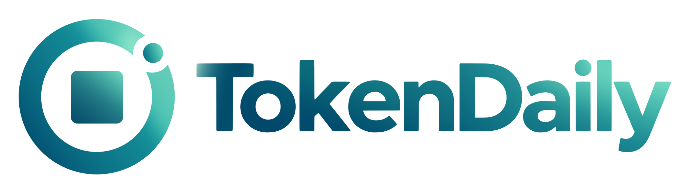
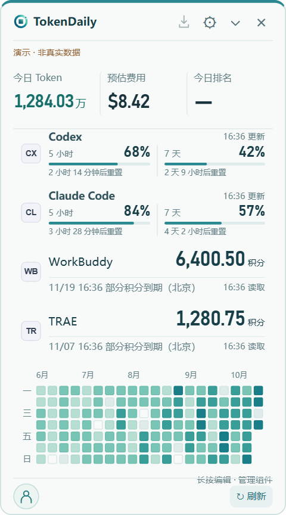
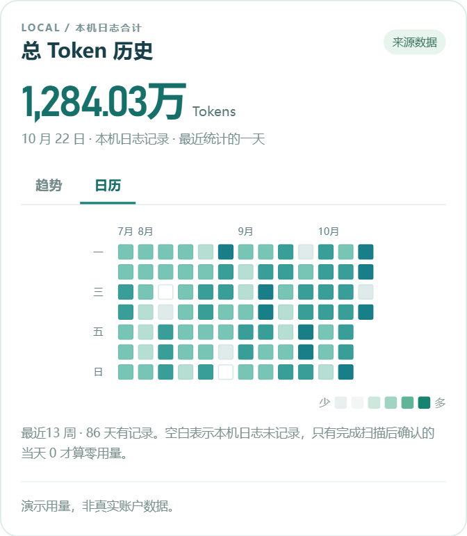
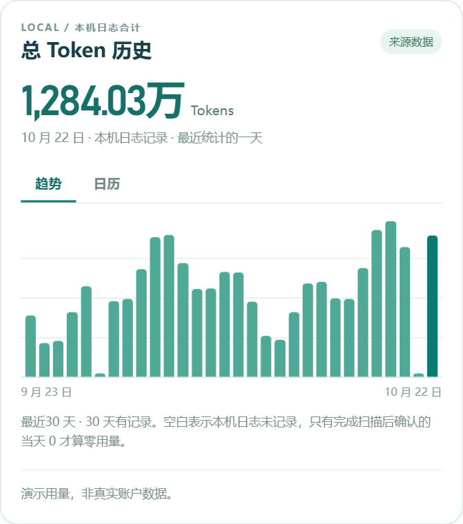

OPEN SOURCE · APACHE 2.0你的桌面 AI 用量与额度助手
剩余额度、恢复时间、每日用量。
收进一个轻巧的面板，随时看一眼。
看清投入 今日 Token 与等效 API 费用
掌握节奏 剩余额度、重置时间与提醒
回看记录 每日热力日历与用量趋势

桌面免费 · 默认本地监测 · 无需注册
YOUR USAGE, OVER TIME
用日历看使用习惯，用趋势看每日变化。需要时，再展开细节。


本地记录汇总 · 按北京时间归日 · 缺失数据保持未知真实组件 · 合成演示数据